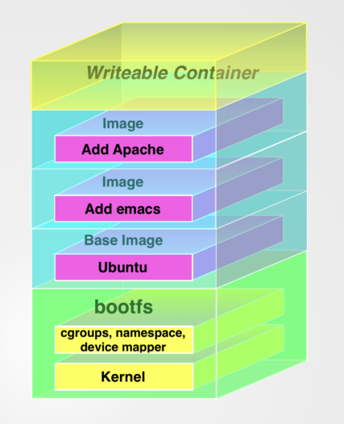
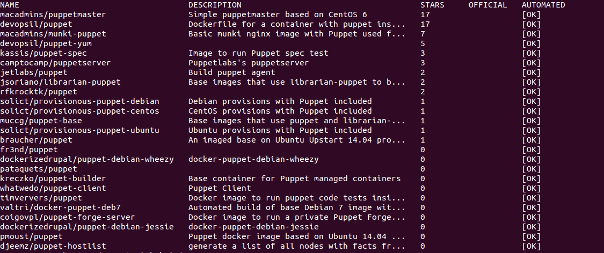
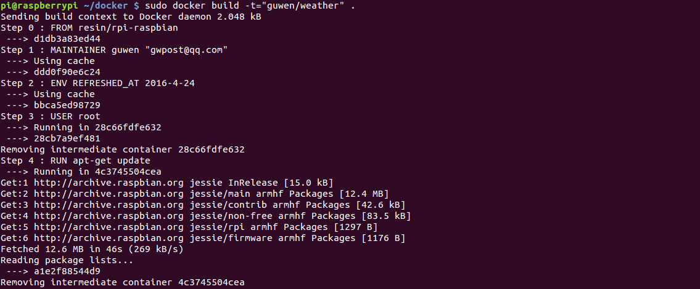

Chapter4-Working with Docker images and repositories
We’ll learn a lot more about Docker images, what they are, how to manage them, how to modify them, and how to create, store, and share your own images.We’ll also examine the repositories that hold images and the registries that store repositories.
Images
- Docker images is the building blocks from which we launch containers.
- A Docker image is made up of filesystems layered over each other. At the base is a boot filesystem, bootfs, which resembles the typical Linux/Unix boot filesystem. A Docker user will probably never interact with the boot filesystem. Indeed, when a container has booted, it is moved into memory, and the boot filesystem is unmounted to free up the RAM used by the initrd disk image.
- Docker next layers a root filesystem, rootfs, on top of the boot filesystem. This rootfs can be one or more operating systems (e.g., a Debian or Ubuntu filesystem).
In the Docker world, however, the root filesystem stays in read-only mode, and Docker takes advantage of a union mount to add more read-only filesystems onto the root filesystem.
The union mount overlays the filesystems on top of one another so that the resulting filesystem may contain files and subdirectories from any or all of the underlying filesystems. - Docker calls each of these filesystems images.
- The image below is called the parent image and you can traverse each layer until you reach the bottom of the image stack where the final image is called the base image.
- When a container is launched from an image, Docker mounts a read-write filesystem on top of any layers below.This is where whatever processes we want our Docker container to run will execute.
- When Docker first starts a container, the initial read-write layer is empty. As changes occur, they are applied to this layer;
- This pattern is traditionally called “copy on write” and is one of the features that makes Docker so powerful. Each read-only image layer is read-only; this image never changes. When a container is created, Docker builds from the stack of images and then adds the read-write layer on top. That layer, combined with the knowledge of the image layers below it and some configuration data, form the container.

Listing Docker images
1 | sudo docker images |
- Local images live on our local Docker host in the /var/lib/docker directory. Each image will be inside a directory named for your storage driver;for example, aufs or devicemapper.
- Images are stored in repositories. You can think of an image repository as being much like a Git repository. It contains images, layers, and metadata about those images.
- We identify each image inside that repository by what Docker calls tags.
- We can refer to a specific image inside a repository by suffixing the repository name with a colon and a tag name.
Repositories
There are two types of repositories: user repositories, which contain images contributed by Docker users, and top-level repositories, which are controlled by the people behind Docker.A user repository takes the form of a username and a repository name.A top-level repository only has a repository name like ubuntu.
Pulling images
When we run a container from images with the docker run command,by default,if you don’t specify a specific tag, Docker will download the latest tag.
1 | # Pulling the fedora image |
1 | # Viewing the fedora image |
Searching for images
1 | sudo docker search puppet |

Two ways to create a Docker image
- Via the docker commit command(Not recommended);
- Via the docker build command with a Dockerfile;
Using Docker commit to create images
Logging into the Docker Hub
1 | sudo docker login |
Committing the custom container
1 | # To find the ID of the last created container |
1 | # Commit the comtainer |
The docker commit command only commits the differences between the image the container was created from and the current state of the container.
Building images with a Dockerfile
Docker executing instructions roughly follow a workflow
- Docker runs a container from the image；
- An instruction executes and makes a change to the container；
- Docker runs the equivalent of docker commit to commit a new layer；
- Docker then runs a new container from this new image；
- The next instruction in the file is executed, and the process repeats until all instructions have been executed；
The RUN instruction in exec form
1 | RUN [ "apt-get", " install", "-y", "nginx" ] |
Running the Dockerfile
1 | sudo docker build -t="jamtur01/static_web" . |
-t option to mark our resulting image with a repository and a name
Dockerfiles and the build cache
If we did not need to change anything in Steps 1 to 2, then Docker would use the previously built images as a cache and a starting point. Essentially, it’d start the build process straight from Step 3.

Using the docker history command
1 | # see each of the image layers inside image and the Dockerfile instruction that created them. |
Viewing the Docker port mapping
1 | # Exposing a port with docker run |
Docker also has a shortcut, -P, that allows us to expose all ports we’ve specified via EXPOSE instructions in our Dockerfile.It would also expose any additional ports we had specified with other EXPOSE instructions in the Dockerfile that built our image.
1 | # Viewing the Docker port mapping |
1 | # The docker port command |
We’ve specified the container ID and the container port for which we’d like to see the mapping.
Dockerfile instructions
FROM
MAINTAINER
ENV
RUN
The RUN instruction will execute any commands in a new layer on top of the current image and commit the results. The resulting committed image will be used for the next step in the Dockerfile.
RUN是在building image时会运行的指令, 在Dockerfile中可以写多条RUN指令.
CMD和ENTRYPOINT则是在运行container 时会运行的指令, 都只能写一条, 如果写了多条, 则最后一条生效.
CMD和ENTRYPOINT的区别是:CMD在运行时会被command覆盖, ENTRYPOINT不会被运行时的command覆盖, 但是也可以指定.
CMD
The CMD instruction specifies the command to run when a container is launched. It is similar to the RUN instruction, but rather than running the command when the container is being built, it will specify the command to run when the container is launched, much like specifying a command to run when launching a container with the docker run command.
You can also specify the CMD instruction without an array, in which case Docker will prepend /bin/sh -c to the command. This may result in unexpected behavior when the command is executed. As a result, it is recommended that you always use the array syntax.
Instead of launching a shell, the container merely returned the list of running processes and stopped, overriding the command specified in the CMD instruction.
ENTRYPOINT
The ENTRYPOINT instruction provides a command that isn’t as easily overridden. Instead, any arguments we specify on the docker run command line will be passed as arguments to the command specified in the ENTRYPOINT.
WORKDIR
The WORKDIR instruction provides a way to set the working directory for the con- tainer and the ENTRYPOINT and/or CMD to be executed when a container is launched from the image.
You can override the working directory at runtime with the -w flag,
ENV
The ENV instruction is used to set environment variables during the image build process.
You can also pass environment variables on the docker run command line using the -e flag.
USER
The USER instruction specifies a user that the image should be run as.
You can also override this at runtime by specifying the -u flag with the docker run command.
The default user if you don’t specify the USER instruction is root.
VOLUME
The VOLUME instruction adds volumes to any container created from the image. A volume is a specially designated directory within one or more containers that bypasses the Union File System to provide several useful features for persistent or shared data:
- Volumes can be shared and reused between containers.
- A container doesn’t have to be running to share its volumes.
- Changes to a volume are made directly.
- Changes to a volume will not be included when you update an image.
- Volumes persist until no containers use them.
This allows us to add data (like source code), a database, or other content into an image without committing it to the image and allows us to share that data between containers. This can be used to do testing with containers and an application’s code, manage logs, or handle databases inside a container.
ADD
The ADD instruction adds files and directories from our build environment into our image.
When ADD’ing files Docker uses the ending character of the destination to deter- mine what the source is. If the destination ends in a /, then it considers the source a directory. If it doesn’t end in a /, it considers the source a file.
If a tar archive (valid archive types include gzip, bzip2, xz) is specified as the source file, then Docker will automatically unpack it for you.
New files and directories will be created with a mode of 0755 and a UID and GID of 0.
COPY
The COPY instruction is purely focused on copying local files from the build context and does not have any extraction or decompression capabilities.
The source of the files must be the path to a file or directory relative to the build context, the local source directory in which your Dockerfile resides. You cannot copy anything that is outside of this directory, because the build context is up- loaded to the Docker daemon, and the copy takes place there.
Any files and directories created by the copy will have a UID and GID of 0.
ONBUILD
The ONBUILD instruction adds triggers to images. A trigger is executed when the image is used as the basis of another image.
The ONBUILD triggers are executed in the order specified in the parent image and are only inherited once.
Pushing images to the Docker Hub
1 | sudo docker push static_web |
Deleting an image
1 | sudo docker rmi jamtur01/static_web |
1 | # Deleting all images |